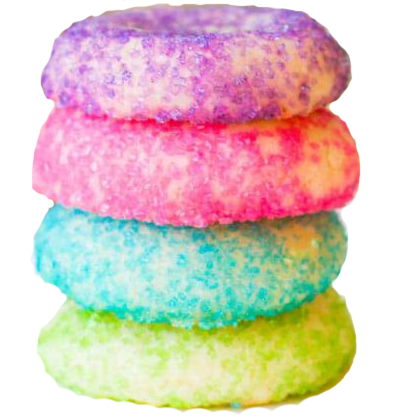

Welcome
Sales forecasting has the ability to improve several areas of operation in the retail bakery. By creating a sales forecast, bakeries can predict cash flow, monitor prices and control operating costs with a higher degree of confidence and accuracy.
